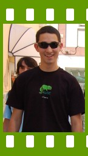

People of openSUSE: Carlos Gonçalves

Here is another ‘People of openSUSE’ interview, this time with Carlos Gonçalves, a very active member of our Portuguese community and founder of ENOS.
By the way Carlos joined the ‘People of openSUSE’ initiative and will do some interviews in the future!
- Nickname: cgoncalves
- Homepage: http://www.cgoncalves.info
- Blog: http://cgoncalves.blogspot.com
- Favorite season: Winter – I don’t like much sun because it’s hot here in Portugal and the winter isn’t so cold as it’s among the Nordic countries.
- Motto: Have a lot of fun…
Please introduce yourself!
My name is Carlos Gonçalves and I was born on March 22, 1989 (18 years old, at the moment) in Caldas da Rainha, Portugal. I’m currently at the University of Aveiro as a Computers and Telematics Engineering student. I’m a lonely guy, no girlfriend ;-(
Tell us about the background to your computer use.
My uncle gave me his old IBM computer but I don’t know which one it was because I was too young (4 years old?!) to remember clearly. One thing I remember, though: it had Microsoft Windows 3.0 installed on a 500MB hard disk.
I grew up using the computer as a console playing Doom I and Doom II, Snake, Solitaire and some other games that I loved in my childhood. When I was about 10 years old I started helping my friends with their computer issues, and surfing on the Internet just for fun.
Technology was improving quickly and I felt that I needed to acquire a powerful computer: Intel Pentium 3 500MHz, 64MB SDRAM, 2MB graphic card with Microsoft Windows 98 – an excellent machine at that time for sure…
Later, a friend of mine told me about a different operating system, Linux, and I became suddenly interested in it. It was around 2002.
I didn’t have a DSL Internet connection so I couldn’t download that ‘new, free and g33k’ OS. For coincidence a magazine were offering a Knoppix Live CD so I decided it was time to test Linux. Knoppix Live CD version 2.1 came with Kernel 2.4.14 and KDE 2.2.1.
When and why did you start using openSUSE/SUSE Linux?
After testing Knoppix Live CD I really became interested in the Open Source world and I thought it would be good for me to expand my tech knowledge. I tested various Linux distributions (Fedora, Mandrake, Caixa Mágica (SUSE based), Slackware, (K)Ubuntu, Gentoo, SUSE, etc) to check which one suited me better. SUSE won the race and I have stayed with it since SUSE 9.2 (2004).
When did you join the openSUSE community and what made you do that?
After choosing SUSE I needed support and found a Portuguese SUSE community almost with no activity and no members. Of course I could have left SUSE right away just because I was new and needed support but I thought it wouldn’t be correct to do so, so I joined the community and started helping those who needed help like I did.
Months later the SUSE-pt community had more members than ever and I felt at home with no reasons to replace SUSE with any other distribution (eg: Ubuntu – with a big -pt community). I realized SUSE wasn’t well-known in Portugal and many users were complaining about the non-existence of documentation/information translated into Portuguese so I started once again helping those SUSErs by writing a few ‘HOWTOs’, and by Hugo Costelha’s initiative, we set up the pt.opensuse.org wiki.
In what way do you participate in the openSUSE project?
I’m an opensuse-i18n-pt translator, the pt.opensuse.org coordinator, ENOS founder, and a packager of some 3rd party KDE/Qt applications, mainly.
What especially motivates you to participate in the openSUSE project?
The great community I met not just only in Portugal as in the world through IRC; the flexible, stable and the innovative technologies that the openSUSE project creates, and also the awesome KDE support!
What do you think was your most important contribution to the openSUSE project/community or what is the contribution that you’re most proud of?
I didn’t do anything special for the openSUSE project/community but maybe spreading openSUSE in Portugal can be considered something that I’m really pround of.
When do you usually spend time on the openSUSE project?
I can’t say for sure, but I would say every time I turn my computer on, when I have free time – mostly in the evenings.
Three words to describe openSUSE? Or make up a proper slogan!
Solid, easy, innovation.
What do you think is missing or underrated in the distribution or the project?
The openSUSE distribution is blameless. Although, in my opinion, marketing is an underrated part of the openSUSE project, so therefore the openSUSE project/community should think about it – organize local/world meetings and have openSUSE booths on tech events, for example. openSUSE has all conditions to conquer, but without ‘aggressive’ marketing it will be an impossible mission.
Apart from that, I don’t see nothing more missing or underrated, which is a good thing…
What do you think the future holds for the openSUSE project?
Even more success! Every day we see people joining us and contributing to a better distribution. I think this is the right way and all of us should continue helping spread and improve openSUSE.
A person asks you why he/she should choose openSUSE instead of other distribution/OS. What would be your arguments to convince him/her to pick up openSUSE?
As I said, openSUSE has all the conditions to every kind of user. It offers the three most used desktop environemnts (KDE, GNOME and Xfce), YaST, SaX, one of the biggest package repositories, etc. Plus, I consider openSUSE the most innovative Linux distribution out there with several tools made by the openSUSE project. These would be my arguments to convince someone to pick up openSUSE… There is no reason to pick up other distributions :-)
Which members of the openSUSE community have you met in person?
Some Portuguese openSUSErs (eg: António Martins and Hugo Costelha), and Jan Madsen from Danish translations team on ENOS.
How many icons are currently on your desktop?
Seven.
What is the application you can’t live without? And why?
Konqueror because it provides many features that make our life easier, being my default web and file manager.
Which application or feature should be invented as soon as possible?
A single application to detect and manage all mobile devices (cell phones, PDAs, laptops) at once. Why? Because the current ones only do a part of what we want and require some time to configure. Users want an easy and quick way to sync their devices ‘plug & play’ing without any configurations and prior knowledge, just out of the box.
Which is your preferred text editor? And why?
GUI: Kate – not only a traditional text editor;
Console: nano – simple just the way I like.
Which famous person would you want to join the openSUSE community?
Steve Jobs. He has an excellent design/style taste that is missing on most open source applications, so I think he could give openSUSE a hand with it.
Which computer related skills would you like to have?
- (All!)
The Internet crashes for a whole week – how would you feel, what would you do?
Sad! I would go into the library to read some tech books and give a walk in shopping to watch some hot chicks heh.
Which is your favorite movie scene?
I don’t have a favorite one, sorry.
Star Trek or Star Wars?
… or none. Too much fantasy.
What is your favorite food and drink?
Food: Portuguese food, with no exception.
Drink: Coca-Cola (yeah, I’m a teenager!).
Favorite game or console (in your childhood and nowadays)?
Doom (PC), Super Mario (GameBoy) Nowadays I play Unreal Tournament and a bit of ‘Counter Strike: Source’; when I get bored I love to shoot at people.
Which city would you like to visit?
Nuremberg, Germany.
What is your preferred way to spend your vacation?
Helping openSUSE and organizing lan parties.
Someone gives you $1.000.000 – what would you do with the money?
Pay my university studies and put the rest in the bank.
If traveling through time was possible – when would we be most likely to meet you?
Not too far. Maybe I would travel +10 years forward to check out whether my life would be very different there.
There’s a thunderstorm outside – do you turn off your computer?
Hell no! I have an UPS with 2 computers plugged into it.
Have your ever missed an appointment because you forgot about it while sitting at your computer?
Always… who hasn’t?!
Show us a picture of something, you have always wanted to share!
I would like to share some pictures of my praxe that started yesterday but I don’t have them yet…
Imagine something like this: a lot of body exercice, eggs, soup and pasta in the head, face painted with baton, march, etc… This is the kind of praxe that the older students do with new students like me in 3 weeks!!
You couldn’t live without…
A computer with an Internet connection, indeed.
Which question was the hardest to answer?
This last ones, because I never had to think about them as I’m thinking now.
What other question would you like to answer? And what would you answer?
Q: What’s the actual state of openSUSE and open source in general in your country?
A: Open source is conquering more homes and enterprises than ever. openSUSE is also conquering quickly but slowly compared with Ubuntu (most users are using Ubuntu due to its aggressive marketing).